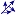

Analyzing Stored Procedures and Triggers
A summary page for a  stored procedure or a
 Trigger (short: PROC)
starts with its name in the upper left corner and some
general information as shown in Figure 7. In brackets, just right
beside the name there is a number for the number of programs that
execute the proc, and the number of procs being executed by the
proc. This is completed with the number of tables or views accessed by the proc.
Trigger (short: PROC)
starts with its name in the upper left corner and some
general information as shown in Figure 7. In brackets, just right
beside the name there is a number for the number of programs that
execute the proc, and the number of procs being executed by the
proc. This is completed with the number of tables or views accessed by the proc.
|
|
PRODUCT_TRIG_U (0 Callers, 1 Calls, 3 Tables Accessed)
|
ON  |
PRODUCT (UPDATE) |
|
|
|
|
| Figure 7: Header Information for Stored Procedures and Triggers |
Consider, Figure 7, here we are looking at the a sample header page of an imaginary trigger
called PRODUCT_TRIG_U on a table PRODUCT.
It is trivial to see that we are dealing with a trigger that will fire on update events.
Naturally, a trigger is not executed by other procs, so the number
of callers should always be zero for triggers. Our PRODUCT_TRIG_U trigger executes one
other procedure, as we can see in the number of "Calls=1", and depends on 3 tables, by implementing
some SQL statement, such as a, SELECT, UPDATE etc.
Note that each number shown here, is based on unique database objects, that is, if there are 3 three calls,
then there are at least 3 different procedures being executed, but this could occur more than 3 times.
The same rule applies to the other numbers, for example, accessing 3 tables could imply that the first tables is used 10 times,
while the second and third are used only once. Click on the name of a proc
and you will see the original ASCII source file of that proc.
Procedure and trigger pages also have more advanced summaries, such as:
We detail the above items in the given order below.
In standard procedural SQL, execution branches from one stored procedure
to another, whenever an exec command is encountered in the SQL source code.
A list of calling procedures for a procedure "foo" is a list
of stored procedures or triggers, which contain an "exec foo" command
sequence in one of their source lines.
| Callers |
Calls |
Tables/Views |
| PRODUCT_TRIG_U |
| SALES_TRIG_D |
| SALES_TRIG_I |
| SALES_TRIG_U |
|
|
| ADDRESS | S |
| | | |
| CATEGORY | S |
| | | |
| PRODUCT | S |
| | | |
| PURCHASE | S |
| | | |
| SALES_HISTORY | S |
U | I | |
|
| SHOP | S |
| | | |
| ACTUAL_VENDOR | S |
| | | |
|
|
Figure 1: A list of callers, a callgraph, and objects accessed |
In standard procedural SQL, execution branches from one stored procedure
to another, whenever an exec command is encountered in the SQL source code.
A list of calling procedures for a procedure "foo" is a list
of stored procedures or triggers, which contain an "exec foo" command
sequence in one of their source lines.
Consider the left column of the table in Figure 1. Here we have
a list of procedures and triggers, which contain an SQL exec statement for an imaginary
procedure called "proc_SalesHistory". The trigger "SALES_TRIG_I",
for example, is listed, because it contains a command sequence like
"exec proc_SalesHistory".
A maximum callgraph is a tree of branches of execution, which results from
an SQL exec command within the procedural code. The maxium callgraph
contains each unique call on a given level within the tree of procedures.
Consider the middle column of the table in Figure 1, here you can see a sample
maximum callgraph for the imaginary procedure called "proc_SalesHistory"
(click on the plus symbol to view all levels).
In the first level, you can see,
that the procedure "proc_SalesHistory" executes a four other procedures
at least once (each call to a procedure is listed at most once in each level of the tree).
Click on the "plus" symbol next to the "proc_CheckStatus" to
discover which procedures are called from there.
Every procedure in a callgraph generated by nextlevel has a little
" " symbol next to its name,
just click on it and you should be transported to the first occurrence of the
" symbol next to its name,
just click on it and you should be transported to the first occurrence of the
exec command in the target proc. You can also click on the name of each
proc in the callgraph to view the SQL code and dependencies of that proc.
In any standard stored procedure you will find SQL statements such as
"SELECT, UPDATE, DELETE, INSERT, or TRUNCATE TABLE.
A sample list of tables and views being accessed by a proc is given in
the right column of the table in Figure 1. Here, we can see that our
imaginary procedure "proc_SalesHistory" does indeed access
a few database objects.
Note, that each name of a
table or view has a
particular color. We know, thus, form the given list that our proc
accesses only one view named ACTUAL_VENDOR,
all other objects are tables.
The single letters on the right side of the list of tables describe the kind
of access that is implemented. A
- "S" stands for SELECT,
- an "U" for UPDATE,
- a "D" for DELETE,
- an "I" for INSERT,
- a "US" for UPDATE STATISTICS,
- and a "TT" for TRUNCATE TABLE.
Click on the name of each table and you should be
transported to another page summarizing that database object. You can also click
on the single letter described above and you should be transported to the first
statement in the SQL code.
The above list of access statements is of particular interest when SQL code needs
to be debugged, re-engineered or documented, because then, we simply have to note
what is in the table and can make basic assumptions about the SQL code without having
to read (literally) hundreds of lines of code.
Note that the table in Figure 1 is just a sample table for a typical procedure or trigger
parsed by Nextlevel.
In a real page generated by nextlevel, each name of a procedure is linked with another
html page containing the code of that database object. You would, for example, click on
"SALES_TRIG_I" and be transported to a page outlining that trigger. You could,
thus, examine all callers of a given procedure, simply by clicking on the link in the list,
and using the back button of your browser. The same is true for the callgraph and the list
of tables and views on the right side of the page.
For the sample table in Figure 1, however, html-links are disabled.
Back